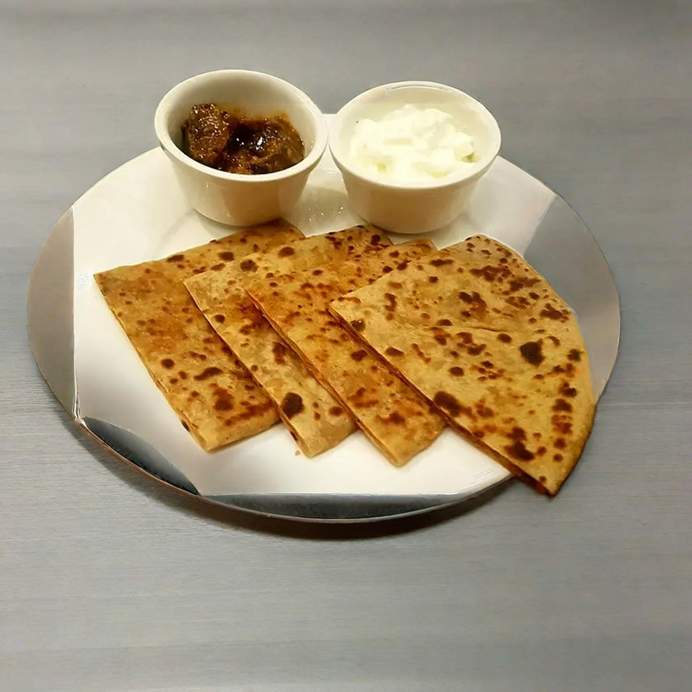

Chapati is a soft, layered flatbread that is widely loved across East Africa, particularly in Kenya. Made from simple ingredients such as wheat flour, water, salt, and oil, chapatis are kneaded into dough, rolled into thin circles, and cooked on a hot pan until golden brown with light flaky layers.
Chapatis are extremely versatile and are often served with dishes such as beef stew, beans, or vegetables. In many Kenyan homes, making chapatis is a cherished cooking tradition, especially during weekends, holidays, and family gatherings. Their soft texture and slightly crispy exterior make them perfect for scooping up stews and sauces, turning any meal into a comforting and satisfying experience.